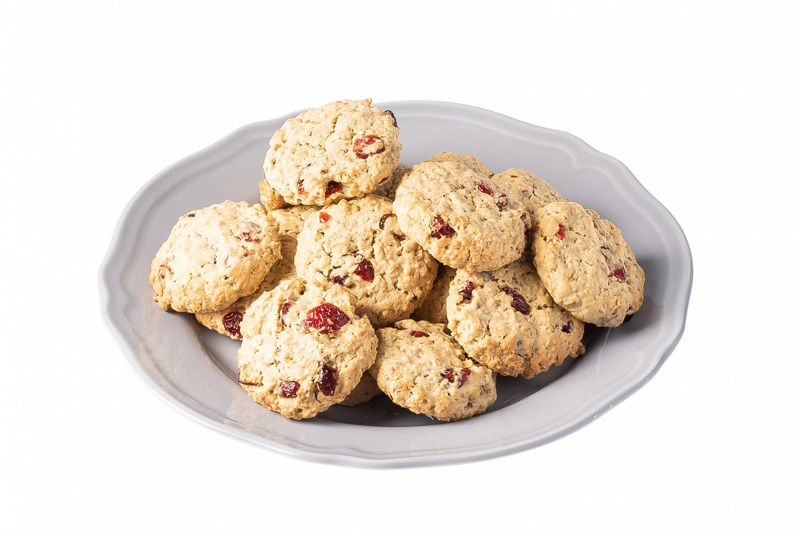

Инструкция приготовления
- Взбить размягченный маргарин с сахаром до белесого цвета.
- Добавить яйца и перемешать до однородного состояния.
- Всыпать муку, разрыхлитель и соль, перемешать.
- Добавить овсяные хлопья и клюкву, замесить однородное тесто, накрыть пленкой и убрать в холодильник на 15 минут.
- Из теста скатать шарики, выложить их на противень, покрытый пекарской бумагой, слегка приплюснуть их ладонью. Отправить в духовку, разогретую до 180 градусов, на 15 минут.
Автор: Кекс Кексович Рейтинг:
★★★★★
